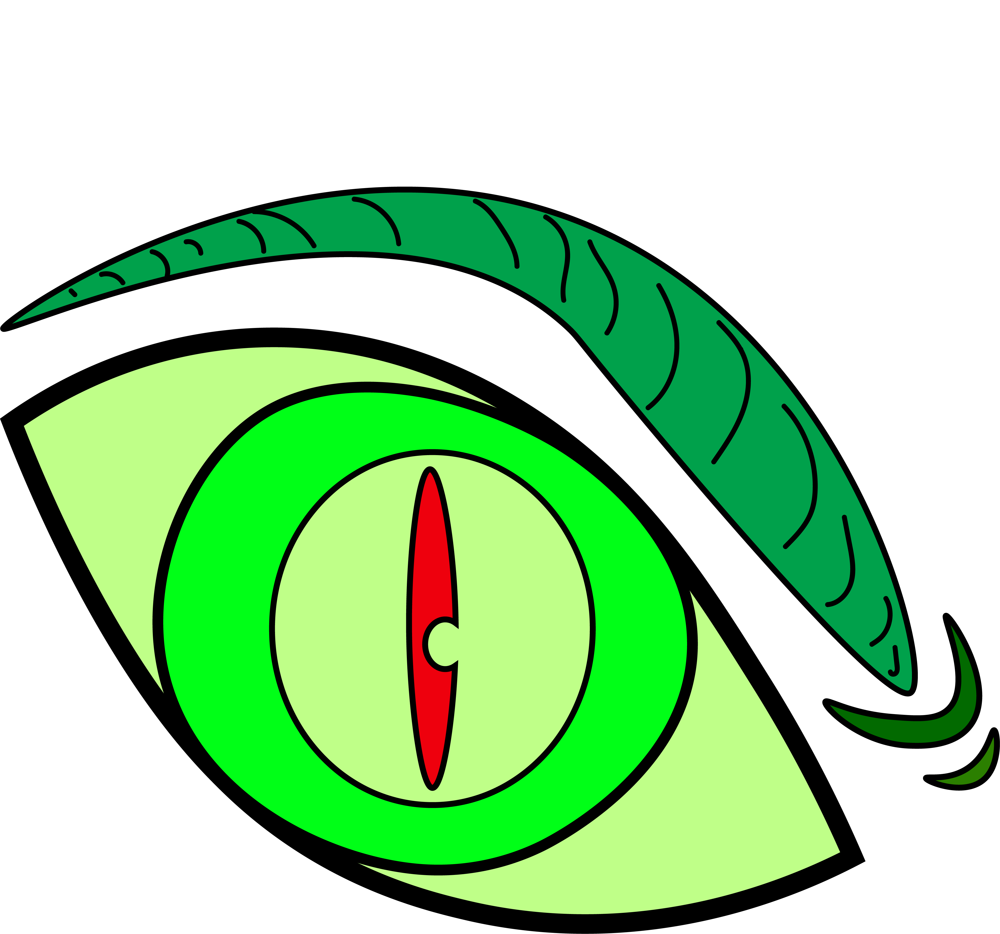

In this illustration, I focused on creating a bold, graphic that looks like a creature or Reptilian eye. I wanted to take the assignment in a different direction than the examples shown in class and make a non-human eye. I used different shades of green as well as red in the center for the eye. I gave it a cartoonishly expressive eyebrow that conveys an emotion of anger and the effect that this creature is maybe looking at its prey.
HOME